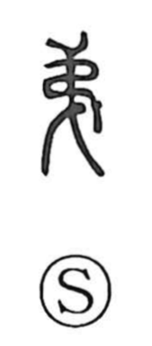

第

Kun: | On: dai, tei
ordinal prefix ・ order ・ sequence ・ to pass an examination ・ mansion
Explanation
第 combines 竹, bamboo, with an abbreviated 弟 as its sound element. 弟 originally shows something bound with a leather thong, the turns of the binding following an orderly sequence. In 第, bamboo writing strips are arranged and tied together in that way.
The strips must follow their proper order for the text to be read. 第 therefore means sequence or a place within a sequence, giving its familiar use in 第一, 第二, and other numbered positions. Ordering also produces ranks or grades. To reach an accepted grade is to qualify, as in 及第, passing an examination. A separate use for a residence comes through interchange with 邸.